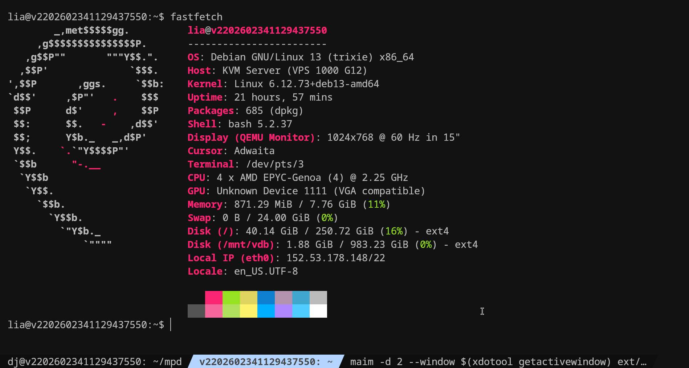

I'm renting a server with netcup for 7 euros/month + 10 euros/month for 1TB of block storage
It's a x86 server with 4 vcpus and 8gb of ddr5 ram, located in austria
they offer a way better price then any of the more mainstream options and I'm very satisfied with the server so far.
I have 2.5Gb/s connection and have a daily traffic quota of 2TB before throttling
I'm using slskd as my soulseek client.
the downloding features of the webui are not the best (I especially miss being able to choose where I download and miss downloading folders/subfolders at once)
but it seems there's a pr which implements that so it should be pushed soon (I hope); other than that, the client itself works well
I also set up a webradio using mpd and forwarded a port so it can be controlled (only db reading and adding songs) with no auth
I used the built in http streaming which maybe is not the best option for flac but it seems to work nice so